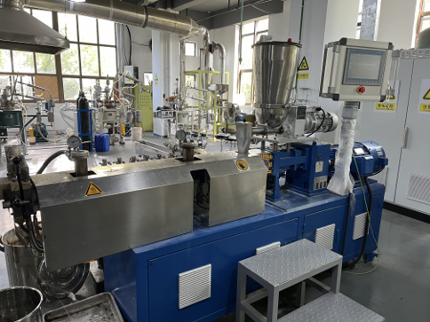
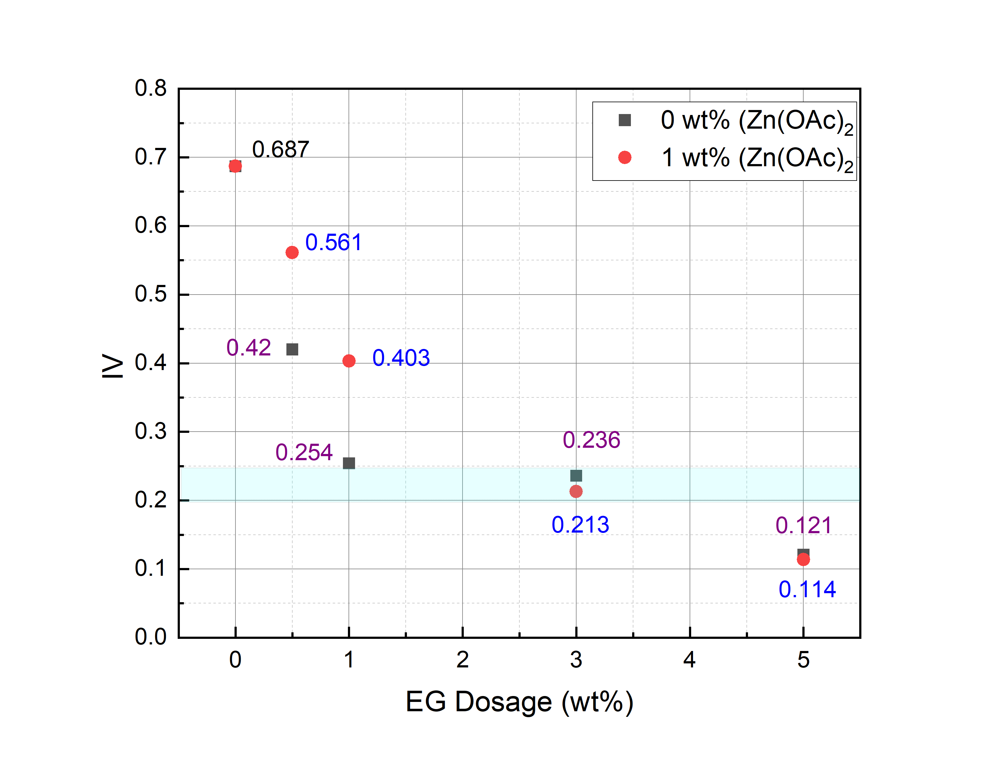
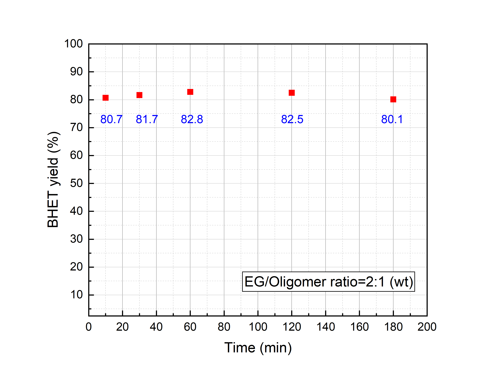

New Method: Three-Step Synergistic Intensification Process
2. New Method: Three-Step Synergistic Intensification Process
2.1 Step 1: Controlled Chemical Shearing and Degradation in a Twin-Screw Extruder (Pre-glycolysis)
At the front end of the depolymerization process, this study introduces a continuous twin-screw extrusion pre-depolymerization step. This process fundamentally enhances strong shear mixing and initial chain segment scission under solid-liquid/molten states through the strong coupling of thermomechanical forces and chemical reagents.
- Experimental Equipment: Twin-screw extruder (Model: Keya HK-26-52D, screw diameter \(26\,\text{mm}\), aspect ratio \(52\)) used for continuous pre-depolymerization of PET raw materials.
- Process Parameters: Unless otherwise specified, the extruder temperature is set at \(265^\circ\text{C}\) and the screw speed at \(25\,\text{rpm}\).

Kinetic Characteristics of Intrinsic Viscosity (IV) vs. EG Dosage (as shown in Figure):

- EG-Domed Dramatic Degradation: The introduction of even trace amounts of \(\text{EG}\) triggers a sharp drop in \(\text{IV}\) from the initial raw material level. Driven by the intense mechanical kneading and tearing of the screws, \(\text{EG}\) acts as a highly active small molecule that instantly achieves macroscopic-to-microscopic uniform dispersion. Through the synergy of mechanochemistry and electrophilic attack, it rapidly induces directional cleavage of the polymer main chains.
- Process Robustness and Controllability Enabled by Catalyst: With the addition of a trace catalyst (\(1\,\text{wt}\%\,\text{Zn(OAc)}_2\)), the system avoids blind pursuit of extreme apparent degradation rates in the low-\(\text{EG}\) region (where apparent \(\text{IV}\) is slightly higher), but instead exhibits a smoother and more regular degradation trend. This trace catalyst essentially endows the high-temperature and high-shear microenvironment with a “chemical reaction rate controllable buffer capacity,” effectively preventing fluctuations caused by random thermal pyrolysis and ensuring high stability of the pre-depolymerization product quality.
- Efficient Chemical Shearing and High Reagent Utilization: The initial \(\text{IV}\) of the raw material is approximately \(0.687\), corresponding to an average degree of polymerization (\(\text{DP}\)) of \(\approx 107\). In the low-\(\text{EG}\) dosage stage, the system exhibits extremely high degradation efficiency. For instance, when the \(\text{EG}\) dosage reaches \(3.0\,\text{wt}\%\) (corresponding to a molar ratio of \(\approx 9.6\%\), theoretically breaking the main chain into \(\approx 10\) segments on average), the \(\text{IV}\) drops sharply from the high-polymer region to \(0.21 \sim 0.24\), rapidly reducing the average degree of polymerization to \(\text{DP} \approx 18\). This proves that under intense mechanical shearing, trace \(\text{EG}\) achieves instantaneous efficient dispersion and directional attack, completely eliminating the solid-liquid mass transfer and spatial hindrance barriers posed by large-sized raw materials.
- Diminishing Marginal Returns and Limitations of Single-Machine Depolymerization: However, when the \(\text{EG}\) dosage exceeds this specific threshold (e.g., increased to \(5.0\,\text{wt}\%\)), the \(\text{IV}\) reduction curve rapidly flattens. This indicates that within the extremely short residence time window of the extruder, simply increasing the reagent dosage relying solely on mechanochemical action falls into diminishing marginal returns, failing to achieve deeper and complete depolymerization. This phenomenon directly refutes the traditional illusion of “achieving deep depolymerization of PET using a single twin-screw extruder alone”—while the extruder can efficiently complete the preceding “mass transfer barrier elimination and preliminary dimensional reduction,” its inherently short duration and limited mass transfer window dictate that it cannot operate as a standalone unit.
- Trace Strategy and Industrial Safety: In contrast, the \(1\% \sim 3\%\) trace \(\text{EG}\) strategy adopted in this study precisely anchors the extrusion stage within the “controlled chemical shearing/degradation” zone. The input trace \(\text{EG}\) is instantly “swallowed” and efficiently utilized by the PET melt, perfectly matching the marginal inflection point of chemical stoichiometry while fundamentally avoiding the flashing phenomenon of free small molecules. Practical industrial observations show that this process is virtually free of vapor emission, requiring only conventional exhaust and vacuum devolatilization to operate safely and smoothly.
- High-Temperature Rheological State and Processability Advantages: At the endpoint of extrusion pre-depolymerization (the characteristic blue zone of \(\text{IV} \approx 0.2\), corresponding to \(\text{DP} \approx 18\)), the material exhibits exceptionally superior rheological properties at high temperatures: it is neither completely depolymerized into a water-thin liquid that causes the screws to lose shearing action, nor a high-viscosity hard dough, but instead presents a waxy/molten state possessing both high fluidity and specific shear resistance. This unique physical state ensures that the twin-screw can stably build up head pressure and smoothly extrude the product, fundamentally preventing equipment slippage and material spitting. More importantly, the extruded product in this \(\text{IV}\) range still retains sufficient melt strength, perfectly enabling stable on-line pelletization and providing excellent solid-state material assurance for seamless integration into subsequent process stages.
- Solidified Core Parameters: Based on these findings, this study ultimately determines the core process baseline for subsequent depolymerization: an optimized ratio of \(3.0\,\text{wt}\%\,\text{EG}\) combined with \(1.0\,\text{wt}\%\,\text{Zn(OAc)}_2\), stably controlling the intrinsic viscosity (\(\text{IV}\)) of the pre-depolymerized product within the golden window of \(0.2 \sim 0.25\), thereby laying a safe, economical, and flawless front-end foundation for subsequent deep depolymerization.
2.2 Step 2: Solid-State Comminution and Micro-Homogenization of Pre-depolymerization Products
- Process Integration and Background: Following the preceding twin-screw extrusion pelletization (producing waxy/molten oligomers with \(\text{IV} \approx 0.2 \sim 0.25\)), due to the extremely short residence time of extrusion shearing and variations in cooling shrinkage, the macroscopic morphology and microscopic chain segment distribution still require further homogenization.
- Core Process Steps and Functions:
- Particle Size Refinement and Specific Surface Area Enhancement: Utilizing customized comminuting equipment to further refine the pelletized product into \(1 \sim 2\,\text{mm}\) (or even smaller micron/millimeter-scale) particles. This sudden drop in physical size multi-fold enhances the specific surface area of the oligomer solids.
- “Dual Homogenization” Mechanism: The first extrusion step focuses on directional chemical bond cleavage (solving macroscopic “cutting”), whereas this step focuses on absolute physical morphology uniformization (solving microscopic “homogenization and refinement”). The internal residual stresses of the crushed granular materials are released, and the molecular weight distributions and physical states among different batches tend to be highly consistent.
- Engineering Value: Such small-particle-size, high-uniformity solid particles can instantly wet and achieve dead-corner-free, high-efficiency solid-liquid contact with catalysts/solvents when subsequently fed into the reactor for deep glycolysis. This completely eliminates mass transfer lag and reaction non-uniformity caused by large blocks, constructing a flawless physical cornerstone for the subsequent main reaction.
2.3 Step 3: High-Efficiency Deep Depolymerization and Product Control in the Reactor (Part I)
- Process Integration and Basic Parameters: Upon completing the preceding twin-screw shearing and solid-state homogenization (\(1 \sim 2\,\text{mm}\) particles), the pre-depolymerized product (Oligomer) is transferred into a conventional reactor for the main deep glycolysis reaction.
- Base Operating Conditions: Temperature \(196^\circ\text{C}\), catalyst \(\text{Zn(OAc)}_2\) dosage \(1\,\text{wt}\%\).
- Conversion Bottlenecks and Curve Characteristics of Traditional One-Pot Method:
- In traditional “one-step” glycolysis, due to the large particle size, high crystallinity, and extremely high solid-liquid mass transfer resistance of directly fed high-molecular-weight PET, the system fails to achieve complete conversion even with blind increases in the \(\text{EG}\)-to-raw-material feed ratio, causing the \(\text{BHET}\) yield to plateau at around \(85\%\).
- As shown in the figure, with increasing \(\text{EG/Oligomer}\) ratios, the curve begins to flatten significantly near a ratio of \(2\), indicating that blindly pursuing higher excess reagents leads to severe diminishing marginal returns.
- Industrial Economics and “Moderate Retention” Strategy of the Present Combined Process:
- Benefiting from the micron/millimeter-scale uniform particle size and ultra-high specific surface area endowed by the preceding steps, deep depolymerization completely breaks free from mass transfer limitations.
- Under mild conditions where the \(\text{EG/Oligomer}\) weight ratio is maintained at around \(2\), the \(\text{BHET}\) yield surges and stabilizes above \(80\%\). Increasing the ratio to \(5:1\) raises the yield to \(95\%\).
- It should be pointed out that while an ultra-high conversion rate of \(95\%\) demonstrates ultimate chemical efficacy, absolute “complete monomerization” is not strictly required in practical industrial manufacturing. Moderately retaining a portion of high-melting intermediate oligomers is actually extremely beneficial for subsequent melt decolorization and impurity removal, achieving an optimal balance between product purity and downstream processability.
- Significant Reduction in Solvent Recovery Burden:
- More importantly, from the macro perspective of industrial scale-up, lower \(\text{EG}\) consumption is friendlier to subsequent large-scale solvent separation, evaporation, and recovery systems. This combined process fundamentally eliminates the traditional reliance on massive excess \(\text{EG}\) solvent through front-end twin-screw pre-shearing, suppressing energy consumption and tail-end solvent recovery costs to the most industrially valuable range.

2.3 Step 3: High-Efficiency Deep Depolymerization and Product Control in the Reactor (Part II: Reaction Kinetics)
- Reaction Kinetics and Time-Independence Characteristics:
- Astonishing Ultra-High-Speed Kinetics (Achieved Lightning-Fast in 10 Minutes): With the \(\text{EG/Oligomer}\) weight ratio fixed at an optimized baseline of \(2\), the system subjected to front-end extrusion pre-shearing and solid-state homogenization exhibits ultra-high reaction rates. Experimental data show that within only \(10\,\text{min}\) of reaction, the \(\text{BHET}\) yield rapidly reaches and stabilizes in the high plateau range of \(80\% \sim 83\%\).
- Time-Dimension “Immunity” and Complete Breakdown of Kinetic Barriers: As the reaction time is further extended from \(10\,\text{min}\) to \(30\,\text{min}\), \(60\,\text{min}\), \(120\,\text{min}\), or even \(180\,\text{min}\), the \(\text{BHET}\) yield curve presents a nearly perfect horizontal straight line. This strongly proves that because the front-end steps completely eliminate the mass transfer resistance and crystalline region barriers of high-molecular-weight PET, the chemical reaction rate constant of the main depolymerization is pulled to an extraordinary magnitude, allowing the reaction to complete in an extremely short time and rapidly reach thermodynamic equilibrium.
- Industrial Space-Time Yield Dividend and Engineering Design:
- Space-Time Yield Surge: This discovery of “time-independence” possesses milestone industrial value. It implies that in practical continuous or semi-continuous production, reaction time is no longer a bottleneck constraining capacity. Large reactors previously requiring several hours can be shortened to residence times of just over ten minutes, enabling an exponential surge in reactor space-time yield and drastically saving equipment investment, plant footprint, and long-period high-temperature energy consumption.
- Balance between Engineering Safety Redundancy and Space-Time Efficiency: From the microscopic kinetics perspective, the main reaction achieves over \(80\%\) conversion within \(10\,\text{min}\), and \(10\,\text{min}\) versus \(30\,\text{min}\) show no substantial difference in yield. However, from the perspective of engineering robustness in large industrial continuous production, this study ultimately prudently sets the main reaction time to \(30\,\text{min}\). This design leverages the ultra-fast reaction kinetics brought by front-end trace \(\text{EG}\) and solid-state homogenization (completely bidding farewell to the hours-long brewing of traditional processes) while utilizing moderate space-time redundancy to effectively counter feeding fluctuations, temperature differentials, and mixing non-uniformities during industrial scale-up, ensuring high uniformity and absolute stability of product quality under large-scale continuous manufacturing.

2.4 Summary: Engineering Conclusion of the Three-Step Synergistic Intensification Route
The three-step synergistic intensification route constructed in this study—“extrusion-controlled shearing \(\rightarrow\) solid-state micro-homogenization \(\rightarrow\) reactor high-efficiency deep depolymerization”—completely overcomes the stubborn ailments of traditional glycolysis processes, such as poor mass transfer, high reagent consumption, and scaling difficulties:
- Step 1 (Twin-Screw Controlled Shearing): Incorporates trace \(\text{EG}\) (\(3.0\,\text{wt}\%\)) and catalyst. While preventing screw slippage and flashing, it rapidly shears and scales down macromolecules into a waxy/molten state with \(\text{IV} \approx 0.2 \sim 0.25\), achieving optimal stoichiometric marginal efficiency.
- Step 2 (Solid-State Micro-Homogenization): Transforms the product into \(1 \sim 2\,\text{mm}\) particles via precision comminution, exponentially increasing specific surface area and completely eliminating dead zones for mass transfer in subsequent reactions.
- Step 3 (Reactor High-Efficiency Deep Depolymerization): Under mild conditions of an \(\text{EG/Oligomer}\) weight ratio of \(2\) and \(196^\circ\text{C}\), the reaction exhibits ultra-fast kinetic characteristics of “reaching completion within 10 minutes and settling securely in 30 minutes,” stabilizing the yield within an efficient range of \(80\% \sim 95\%\).
Comprehensive Engineering Benefits: Through the coupling of trace reagents and thermomechanical forces, this combined process guarantees industrial safety redundancy and drastically reduces tail-end solvent recovery loads, thereby realizing efficient, economical, and low-carbon recycling of waste polyester.